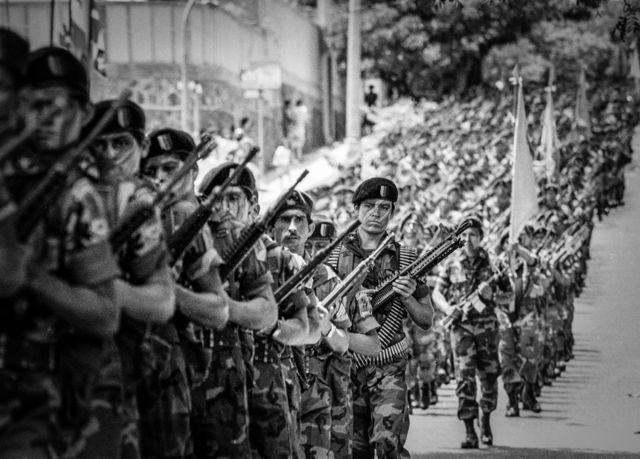
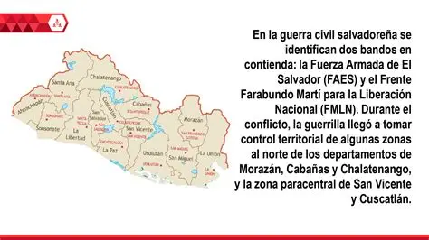

Un Capítulo Doloroso de la Historia Salvadoreña
La Guerra Civil de El Salvador fue un conflicto armado interno que se libró entre 1979 y 1992. Este período oscuro en la historia del país estuvo marcado por profundas divisiones sociales, políticas y económicas, y dejó una huella indeleble en la nación y su gente. Se estima que alrededor de 75,000 personas perdieron la vida y miles más fueron desplazadas o desaparecidas.
El conflicto enfrentó al gobierno militar y la Fuerza Armada de El Salvador (FAES), apoyados por Estados Unidos, contra el Frente Farabundo Martí para la Liberación Nacional (FMLN), una coalición de grupos guerrilleros. Las raíces del conflicto se encontraban en la desigualdad socioeconómica, la represión gubernamental y la polarización ideológica en el contexto de la Guerra Fría.
Este sitio web busca explorar los momentos más significativos de esta guerra, sus protagonistas, las consecuencias devastadoras y el difícil camino hacia la paz. Es un esfuerzo por recordar y comprender un pasado que aún resuena en la sociedad salvadoreña.